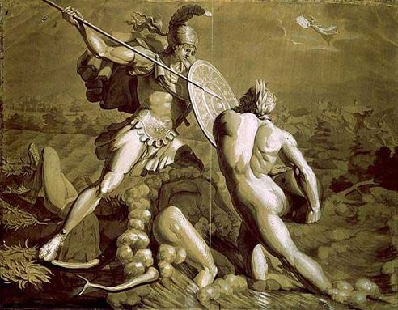

Từ khi quân Hy Lạp lâm nguy, các vị danh tướng đều bị thương rút khỏi chiến trường về hậu quân. Achille mặc dù không được ai thông báo song cũng biết hết. Ngồi ở căn lều của mình bên những con thuyền trũng, Achille thấy những chiến xa từ chiến trường hối hả trở về là chàng rõ. Chàng gọi người bạn thân thiết của mình là Patrocle truyền cho bạn phải tới chỗ lão vương Nestor để hỏi han tin tức về tình hình chiến sự. Lão vương Nestor tường tình lại cho Patrocle rõ tình thế nguy nan của quân Hy Lạp. Lão vương mong muốn, thôi thì Achille không nguôi nỗi giận hờn, không tham gia chiến đấu thì đành chịu, song Patrocle nên xin với Achille cho mình xuất trận để giúp đỡ quân Hy Lạp. Lão vương Nestor hy vọng rằng Patrocle xuất trận với vũ khí và bộ áo giáp của Achille, biết đâu đấy quân Troie lại không nhầm tưởng rằng Achille đã nguôi giận, trở lại chiến trường cùng với đạo quân Myrmidon của mình, và chúng sẽ hoảng sợ, chối bỏ những cuộc đụng đầu với người anh hùng Achille. Như vậy tình hình có thể trở lại sáng sủa hơn.
Patrocle từ chiến trường trở về tường trình lại cho Achille biết rõ tình hình với một nỗi buồn rầu và lo lắng khôn tả. Nghe xong, Achille chấp thuận cho Patrocle cùng với quân sĩ Myrmidon xuất trận để giúp đỡ quân Hy Lạp. Đang khi Patrocle chuẩn bị thì Achille chợt nhìn thấy khói bốc lên cuồn cuộn. Chàng đập mạnh tay xuống đùi thét lớn:
- Thôi hỏng rồi, hỏng rồi! Patrocle hỡi! Ta trông thấy ngọn lửa hung tàn bốc lên ở khu vực để chiến thuyền. Mau mau ra xem thế nào để cứu lấy chiến thuyền, nếu không thì ngay đến việc rút lui cũng không được nữa. Mặc áo giáp vào, cầm vũ khí đi! Mau lên! Còn ta, ta sẽ cho quân sĩ hội họp.
Achille nói rồi đi từ lều này đến lều khác ra lệnh cho các tướng sĩ chuẩn bị xuất trận. Chỉ phút chốc đoàn quân Myrmidon đã tập hợp thành năm đạo dưới sự chỉ huy của năm vị tướng danh tiếng. Với tư cách là người chỉ huy tối cao, Achille lên tiếng kêu gọi:
- Hỡi anh em binh sĩ Myrmidon thân yêu! Hẳn rằng trong chúng ta không một ai quên những lời Hector kêu gọi quân Troie tiêu diệt chúng ta. Nghe những lời nói ấy, các anh em đã nổi nóng, công kích ta, trách móc ta là người nhỏ nhen, găm giữ mối giận hờn dai dẳng. Các anh em không thể chịu nổi những lời ngạo mạn của Hector. Ai ai cũng muốn xông ra chiến trường quyết một phen tử chiến với quân Troie. Thì đây, hôm nay, cái ngày mà anh em mong muốn được bày tỏ khí phách của người chiến sĩ Myrmidon đã tới. Ta mong rằng mỗi chiến sĩ sẽ giao đấu với quân Troie bằng một trái tim dũng cảm như sư tử.
Nghe Achille nói, anh em binh sĩ Myrmidon bừng bừng khí thế. Đội ngũ uy nghiêm, những khuôn mặt quả cảm, họ hùng dũng tiến bước, Patrocle đi đầu. Chàng móc áo giáp của Achille, tay cầm vũ khí của Achille.
Nhìn thấy đạo quân Myrmidon xuất trận, quân Troie hết sức hoảng hồn. Họ tưởng đâu Achille đã nguôi giận, trở về sát cánh cùng Agamemnon chiến đấu. Hàng quân của họ phút chốc xao động, ai nấy lo lắng đưa mắt tìm chỗ chạy trốn, vào cuộc, Patrocle phóng lao giết ngay Pyrechmes thủ lĩnh của những người Péonien. Ngọn lao đâm trúng vai phải hất Pyrechmes ngã ngửa xuống đất với một tiếng kêu thất thanh. Quân sĩ Péonien thấy chủ tướng bị giết liền bỏ chạy. Patrocle, thế là đã lập một chiến công xuất sắc. Chàng tiếp tục gieo kinh hoàng xuống quân Troie. Chàng xông lên tung hoành trong đám địch quân, đánh bật chúng ra khỏi khu vực chiến thuyền rồi dập tắt ngay ngọn lửa, nhưng quân Troie không phải đã từ bỏ cuộc giao tranh. Họ vẫn ra sức chống đỡ và chỉ rút lui khi nào họ không còn hơi sức để lấn vào khu vực chiến thuyền. Dù sao thì chiếc chiến thuyền mới bị cháy một nửa đã được cứu thoát. Quân Hy Lạp thừa thắng, đánh đuổi quân Troie rất quyết liệt, và cuối cùng quân Troie phải bỏ chạy. Patrocle không chậm trễ, đuổi sát theo sau. Vừa lúc dũng sĩ Arélique quay mình chạy thì Patrocle phóng lao xuyên qua đùi. Arélique ngã chúi đầu xuống đất.
Quân Troie vừa đánh vừa rút. Tuyến đầu của họ đã bị chọc thủng, và bây giờ Patrocle đang tìm cách đánh quật lại khu vực chiến thuyền nhằm chặn đường rút của quân Troie. Tướng Pronoos trong một giây sơ ý, cầm khiên che không kín người, đã bị Patrocle phóng lao trúng ngực. Tướng Thestor bị chết mới đau đớn hơn. Vị tướng này sợ hãi ngồi co mình trong hòm xe, dây cương cuốn chặt trong tay. Patrocle tiến đến gần, thọc một nhát lao vào hàm mạnh đến nỗi xuyên qua hàm răng đâm ra sau gáy. Thế rồi với ngọn lao đó chàng nâng bổng địch thủ lên và kéo ra khỏi hòm xe giống như người ngồi câu trên một mũi đá kéo lên khỏi mặt nước biển một con cá to.
Tướng Sarpédon thấy Patrocle tung hoành ngang dọc trên chiến trường như đi vào chỗ không người, trong lòng rất đỗi bực tức. Chàng quát mắng quân Troie:
- Hỡi những người Lycie! Thật là xấu hổ! Các người chạy trốn đi đâu? Đây chính là lúc các người phải tỏ mặt anh hùng, sáng danh chiến sĩ chứ! Ta, ta sẽ tiến thẳng đến đối mặt và giao đấu với tên tướng lợi hại kia.
Sarpédon nói xong liền nhảy phắt từ chiến xa xuống đất, cầm lao tiến bước. Patrocle thấy vậy cũng nhảy khỏi chiến xa, cầm vũ khí nghênh chiến.
Patrocle phóng lao giết chết người đánh xe của Sarpédon. Sarpédon phóng lao trả thù, nhưng mũi lao không trúng Patrocle mà lại trúng vào vai phải con ngựa Pédase khiến cho con ngựa nhảy chồm lên đau đớn rồi ngã vật xuống đất, hí lên những tiếng ghê rợn. May thay dũng sĩ Automédon đã kịp thời đến giải nguy. Chàng rút ngay thanh gươm đeo bên sườn vung lên, nhảy một bước tới chém đứt dây cương giải thoát cho con ngựa Pédase khỏi cỗ xe. Trên thiên đình thần Zeus theo dõi cuộc giao tranh của hai dũng tướng. Thần bày tỏ với vợ mình là nữ thần Héra nỗi lo ngại đứa con yêu quý nhất của thần trong số những người trần thế đoản mệnh là Sarpédon sẽ bị Patrocle giết chết. Thần phân vân không biết nên cướp Sarpédon đi, đưa chàng về đất Lycie hay bỏ mặc chàng cho tướng Patrocle đánh bại. Nữ thần Héra uy nghiêm có đôi mắt to nghe chồng nói như vậy liền phản bác lại ngay. Thần Zeus đành im lặng, nhưng đấng phụ vương của các thần và những người trần thế đoản mệnh bèn vẫy tay giáng xuống mặt đất đen một trận mưa máu để vĩnh biệt đứa con sùng ái của mình.
Sarpédon lại phóng một mũi lao nữa, và một lần nữa lao bay đi không trúng đích. Ngọn lao bay lướt qua vai trái của Patrocle chàng làm sầy da, chảy máu người anh hùng. Đến lần Patrocle đánh trả. Mũi lao phóng mạnh, đâm trúng ngực, gần tim Sarpédon làm chàng đổ sập xuống như một thân cây bị đẵn mất gốc. Trong phút hấp hối, Sarpédon nhắn lại với người bạn chiến đấu của mình những lời lẽ tha thiết như sau:
- Hỡi Glaucos bạn hiền! Chính đây là lúc bạn phải tỏ ra mình là một chiến sĩ dũng cảm. Bạn hãy kêu gọi các tướng lĩnh Lycie chiến đấu trả thù cho ta, và bạn nữa, với mũi lao đồng này bạn hãy chiến đấu trả thù cho ta, chiến đấu bảo vệ thi hài ta. Ta sẽ mãi mãi là một chuyện xấu xa ô nhục nếu một khi quân Achéens cướp được thi hài ta, tước đoạt được áo giáp và vũ khí của ta. Bạn hãy chiến đấu bền gan và kêu gọi mọi người hăng hái làm tròn bổn phận.
Tin Sarpédon tử trận phút chốc truyền đi khắp quân Troie. Một nỗi đau xót, thương tiếc khôn nguôi cắn rứt trái tim mọi người. Mọi người đều nhớ đến người anh hùng đã từng vào sinh ra tử nhiều phen, khi tiến công thì như bão lốc, khi phòng ngự thì như bức tường thành. Hector là người đau xót hơn cả. Chàng nén đau thương cổ vũ quân Troie tiến lên trả thù cho người dũng sĩ danh tiếng, và quân Troie dưới sự dẫn đầu của Hector hừng hực căm thù tiến lên với những tiếng kêu thét rợn người.

Cuộc chiến đấu diễn ra khá ác liệt quanh thi hài của Sarpédon. Quân Myrmidon mới chỉ đoạt được đôi chiến mã, chưa tước được áo giáp và vũ khí của Sarpédon thì quân Troie đã kịp thời xông đến, Agacles một vị tướng trẻ đầy nhiệt tình của quân Myrmidon vừa cúi xuống đặt tay vào thi hài Sarpédon thì bỗng thấy đánh rầm một cái, trời đất tối đen cả lại. Hector đã bê một tảng đá nện vỡ đôi đầu Agacles làm Agacles ngã sấp mặt xuống thi hài Sarpédon. Patrocle thấy chiến hữu của mình bị đánh ngã liền xông lên trả thù. Chàng từ chiến xa nhảy phắt xuống đất tay trái cầm dao nhọn, tay phải nhặt một hòn đá ném thật mạnh về phía Hector lúc này đang đứng trên chiến xa. Đá ném đi không trúng Hector mà trúng chiến sĩ đánh xe của Hector là Cébrion đang cầm cương ngựa. Cébrion từ chiến xa ngã nhào xuống, hồn lìa khỏi xác.
Hector nhảy từ trên chiến xa xuống cản Patrocle lại. Nhìn hai dũng sĩ giao đấu với nhau quanh thi hài Cébrion, người ta tưởng như thấy một đôi sư tử đang quần nhau trên đỉnh một ngọn núi để tranh giành một con hươu đã chết. Ai thắng trong cuộc giao đấu này? Số phận không cho Patrocle thắng. Thần Apollon được một đám mây mù bao phủ, nhẹ nhàng đến sau lưng Patrocle mà Patrocle không biết. Thần khẽ đập bàn tay vào lưng và đôi vai rộng của Patrocle. Thế là mắt Patrocle hoa lên. Thần còn hất chiếc mũ đồng của Patrocle xuống đất và làm cho ngọn lao dài và nhọn của Patrocle gãy đôi. Chưa hết, cả cái khiên cũng từ vai rơi xuống đất và bộ áo giáp bị tháo rời khỏi người. Đầu óc Patrocle choáng váng, tay chân mỏi rã rời, Patrocle kinh hoảng khôn xiết. Chính trong lúc ấy, một chiến sĩ Troie đã phóng một mũi lao nhọn vào sau lưng Patrocle. Ai? Đó là Euphorbe một dũng sĩ đã từng hạ hàng hai chục địch thủ dưới chân chiến xa. Mũi lao không kết liễu được số phận Patrocle mà chỉ làm chàng bị thương, nhưng Hector đã bắt gặp Patrocle đang lẩn trốn vào hàng quân. Chàng không chậm trễ, tiến lên giáp chiến. Chàng đâm mũi lao vào bụng dưới Patrocle rồi ấn sâu ngọn lao. Patrocle đổ sập xuống như một tảng đá bị lở.
Sau khi tước đoạt bộ áo giáp và vũ khí của Patrocle, bộ áo giáp và vũ khí rất trứ danh vốn của Achille cho mượn, Hector bèn nảy ra ý định làm nhục thi hài Patrocle. Chàng muốn chặt thi hài ra làm nhiều mảnh để vứt cho chó cho chim. Ý định đó không thực hiện được vì Ajax đã tới. Như một cơn lốc, Ajax ào ào xông vào chiến trận. Hector phải lui bước khi thấy cái khí thế ghê gớm ấy. Song nhiều tướng khác đã lao ra đương đầu với Ajax. Cuộc chiến đấu quanh thi hài Patrocle diễn ra rất ác liệt.